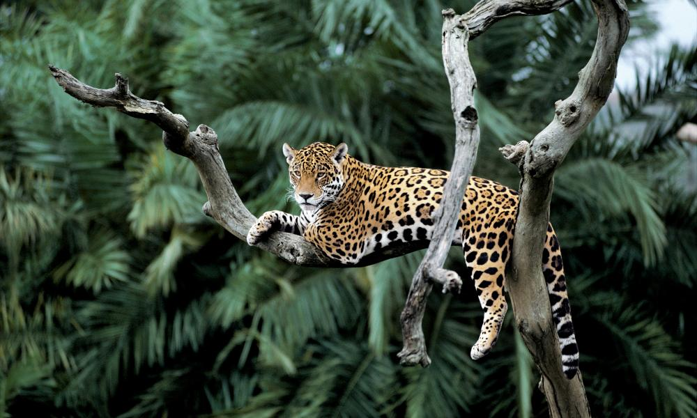
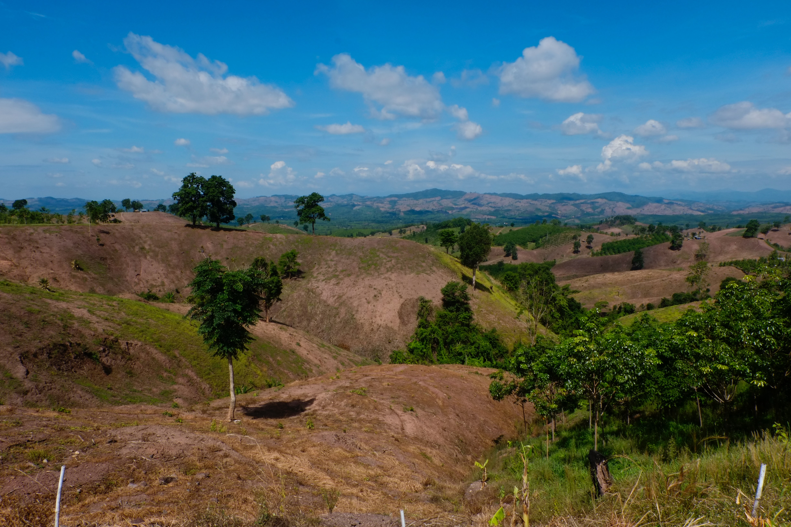
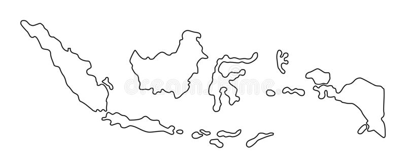
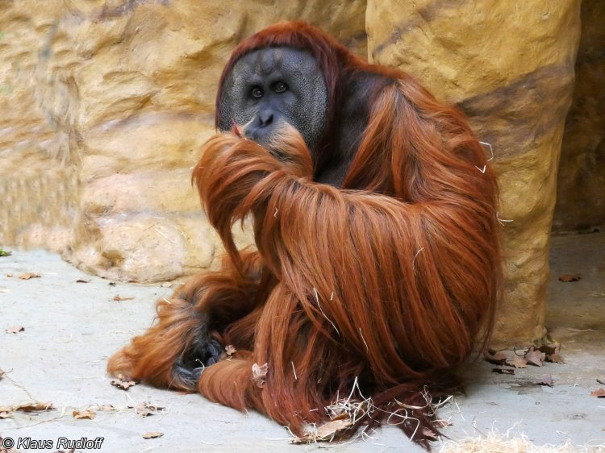

10,000 years ago
There were 6 billion hectares of forest, covering 57% of the habitable land on Earth.
Let’s put this into perspective…
1 billion hectares is equivalent to the size of the U.S.
120 years ago
5.1 billion hectares of forest remained, covering 48% of habitable land.
Present
Today, the forest covers 38% of habitable land—a loss of over 1 billion hectares in a century.
This leaves us with 4 billion hectares.
Causes of Deforestation
With the rapid industrialization and development of agricultural technology of the past century and a half, countries have increasingly converted their forests for agricultural land use and urbanization. The tens of thousands of wildfires that occur every year also contribute to almost one-quarter of global forest loss, resulting in the loss of biodiversity and increased CO2 emissions.
However, not all forest loss is equal. While wildfires result in massive forest loss, the victim forests will eventually regrow over many years. In contrast, completely removing primary rainforest to produce crops or build towns will permanently change its ecosystem—these trees will not regrow. The latter is what we call deforestation.
95% of deforestation occurs in the tropics, and beef, soil, and palm oil production are responsible for 60% of this damage. It is no surprise that palm oil and soy account for 18% of this due to their many uses—from use in food products to feed for livestock and biofuels.
And as for beef, 2.1 million hectares every year are set aside for pasture land to raise cattle—that’s about half the size of the Netherlands!
Urbanization, on the other hand, accounts for only 0.6% of deforestation. Simply put, the products and food we choose to buy have a greater impact on global land use than expanding cities.
Wildfires
Another major cause of forest loss is wildfires, both natural and deliberately started for maintenance or site preparation purposes. While forests burned in wildfires are destroyed, this damage is temporary and they will ultimately regrow if the land is not converted and left alone.
However, despite this lower relative impact on long term forests, wildfires cause massive disruption to natural habitats and have resulted in the loss of biodiversity. Some species that have been impacted by wildfires and forest loss in general include the orangutan and the jaguar.
Effects of Deforestation
Every second that passes, we lose more and more of our forests. As you read this sentence, a football field of forest was just lost. With deforestation also comes other consequences, including the loss of the many plants and animals that live in our forests and increased greenhouse gas emissions that contribute to global warming.
The Amazon Rainforest is one of the most diverse ecosystems in the world, home to a third of the world’s species. The continued destruction of an ecosystem such as the Amazon will have disastrous consequences worldwide. The Amazon regulates our ecosystem, the plants are essential to modern medicine, and it plays a key role in the Earth’s oxygen and carbon cycles. The rate of species extinction is accelerating and we will lose our biodiversity if we continue down this path of destruction. These negative effects are not limited to just the Amazon, the deforestation of forests everywhere will continue to cause irreversible harm to our planet unless we make a change.

Forests As Carbon Sinks
Beyond just producing oxygen, forests also act as carbon sinks and lowering the CO2 in the atmosphere. When deforestation occurs, there are less trees available to capture CO2, in turn inreasing the global atmospheric levels of CO2.

Forests Worldwide
Indonesia

Pongo pygmaeus (Bornean Orangutan)

Pongo abelii (Sumatran Orangutan)

How do we stop it?
Forest Expansion
Afforestation is when trees are planted in an area with no previous tree cover, and it is one of the ways we are fighting against deforestation. Additionally, forests are also being restored through natural succession on land and reforestation. These are all promising AND necessary efforts to reverse deforestation and its effects, but what can we do as individuals?
How do we stop it?
- Plant a tree
- Go paperless
- Recycle
- Raise awareness and continue to educate yourself
- Shop from sustainable and eco-friendly businesses
- Donate to a tree planting foundation!

What will happen if we don't?